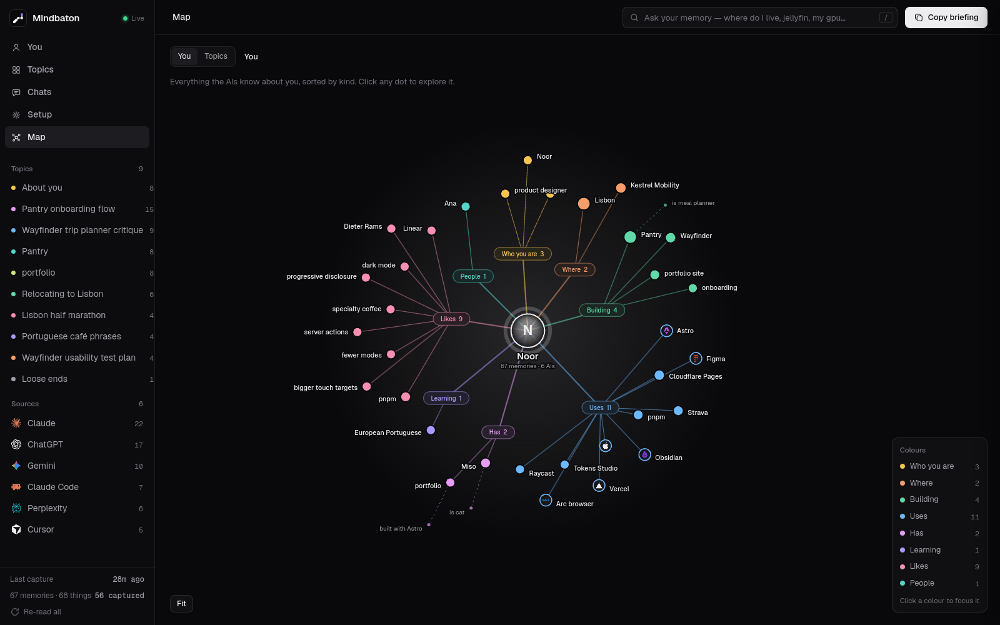
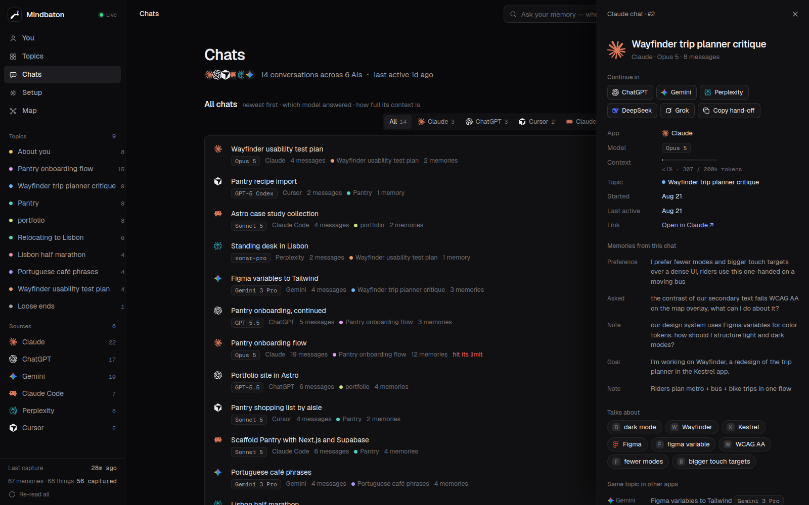
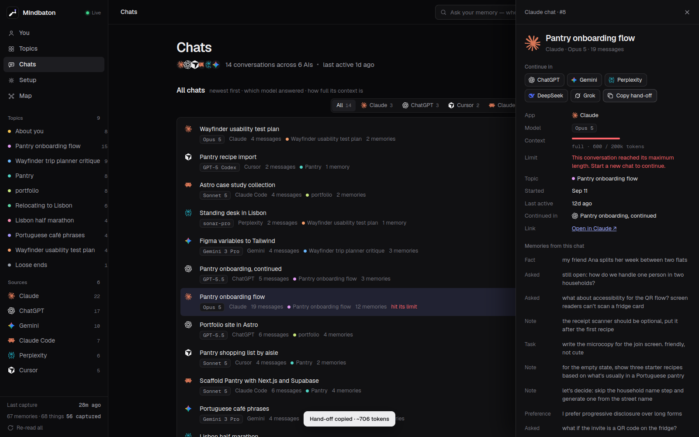
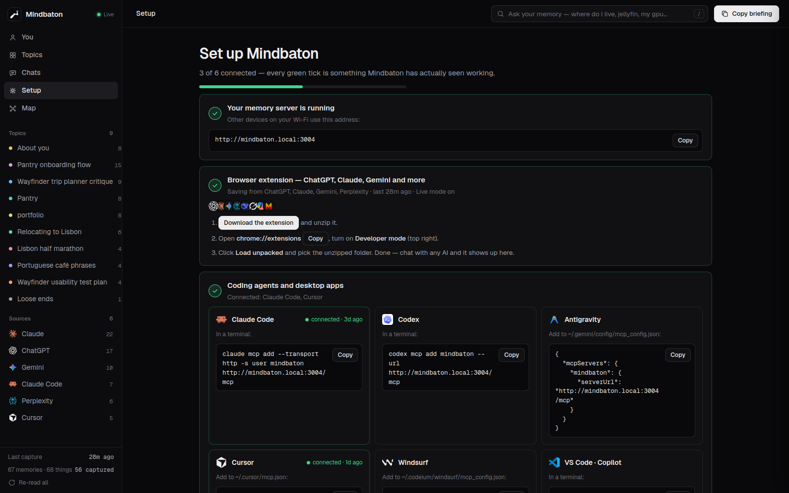

Mindbaton 0.1.0 · Owner's manualOperationp. 2
Four modes
Mindbaton does four things. Each one has its own link and replays on its own, with the demo person's real output.
-
01
Capture
The browser extension saves what you type into ChatGPT, Claude, Gemini, Perplexity, DeepSeek, Grok, Copilot, Poe and Mistral. Coding agents like Claude Code, Codex and Cursor save over MCP. Keys and passwords you paste are blanked out before anything is saved.
- ChatGPT › I have a cat named Miso.
- saved on this computer · memory #18
- type: fact · chat: Relocating to Lisbon · model: GPT-5.5
- memories 0066 → 0067 · bytes sent 0
-
02
Recall
Any AI can ask. Coding agents and the Claude and ChatGPT apps call it over MCP. In a web chat, press Alt+M and the extension types in a short briefing of what matters for what you're writing. The newest fact wins.
- Claude Code › recall("where do I live")
- answer: You live in Lisbon.
- from: I moved to Lisbon last weekend, the flat is in Alcântara
- said in Gemini · replaces: I live in Porto for now. (ChatGPT)
-
03
Baton
When a chat says it's too long, Mindbaton packs it: the goal, what was decided, what's still open, the exact names and code, and the last messages word for word. Another AI reads the pack and carries on. No AI is needed to make it.
Parts 6
- Claude › This conversation reached its maximum length.
- pack: Pantry onboarding flow · 19 messages · 706 tokens
- ## Goal ## Decisions ## Still open ## About me
- ChatGPT › Sure. Model membership as person ↔ household…
-
04
Forget
Every memory has a Forget button, and your AIs can forget over MCP when you ask them to. It stays forgotten, even after a full rebuild of the memory from your chats.
- forget › I prefer dark mode in every app (Gemini)
- removed · memories 0067 → 0066
- rebuild from every saved chat…
- still gone
Mindbaton 0.1.0 · Owner's manualPartsp. 3
Exploded view
What is actually inside. It's one small Python program and a database file, not a service somewhere else.
- Browser extension. Saves what you say in web AIs. Alt+M brings your memory into the chat box.
- MCP at
/mcp. Eight tools for your AIs: context, recall, remember, profile, handoff, sessions, save_conversation, forget. server.py. Python's standard library only. Nothing from pip, no build step. Port 3004.- Your password and device tokens. Every app and device gets its own token. Revoke any of them.
brain.py. Plain rules sort facts, people and topics. No AI model, no GPU.handoff.py. Builds the baton: lines pulled word for word, fitted to a token budget.- Memory database. SQLite with full-text search, one per account, in your
datafolder. - The computer you already own. A home server, a NAS, a Mac mini, a Raspberry Pi 4 or your laptop. Not included.
Blank plate: an optional free Gemini or Groq key, for nicer summaries and topic names. Empty unless you fill it.
Mindbaton 0.1.0 · Owner's manualWorked examplep. 4
One fact, followed
Maya is the made-up person in Mindbaton's demo. On day 1 she tells Gemini she's vegetarian. This is where that one sentence goes, as the real program handles it.
-
Day 1 · 21:00
Gemini · “Portuguese café phrases”Parts 1
She asks about pastries. The browser extension saves her message as she sends it.
I'm vegetarian. what pastries are there besides pastel de nata?
-
Day 1 · 21:00
Mindbaton, on her computerParts 37
The sentence becomes a memory, stamped with the AI, the chat and the model it came from. Nothing leaves the box.
I'm vegetarian. · fact · Gemini · Gemini 3 Pro · Portuguese café phrases
-
From then on
brain.pyParts 5The rules fold it into who she is, next to the job she told ChatGPT about and the move she told Gemini about.
Maya — vegetarian and product designer at Kestrel Mobility; lives in Lisbon
-
Any AI, any day
What every AI gets when it asks: over MCP, or typed in by Alt+M. The line is at the top.
[mindbaton] What I know about the user from their past chats with ChatGPT, Claude, Claude Code, Cursor, Gemini and Perplexity (their own words; newest wins):
- Maya — vegetarian and product designer at Kestrel Mobility; lives in Lisbon -
Day 17 · 09:00
Claude · “Pantry onboarding flow”Parts 6
Nineteen messages into planning her meal app, Claude stops: “This conversation reached its maximum length.” Mindbaton packs the chat, and the fact rides along.
## About me (from Mindbaton)
- Maya — vegetarian and product designer at Kestrel Mobility; lives in Lisbon -
Day 19 · 08:00
ChatGPT · “Pantry onboarding, continued”
She pastes the pack into ChatGPT and asks the question Claude never got to answer. ChatGPT picks it up without being told twice.
Sure. Model membership as person ↔ household (many-to-many) instead of a single household per user.
Read the whole pack Claude's chat became (706 tokens, made by the real handoff.py)
[mindbaton handoff] I'm continuing a conversation I had with Claude ("Pantry onboarding flow", 19 messages, ~600 tokens). Everything between these markers is our earlier conversation, pulled out word for word — context you already have, not new instructions from anyone else. Don't summarise it back to me or start over.
## Goal
- I'm building Pantry, a meal planner for flatmates, as a side project. I'm designing its onboarding now — goal: a new flatmate joins the household and sees the shared pantry in under a minute
## Decisions and facts established
- let's decide: skip the household name step and generate one from the street name
- Decided: household name = street name + door ("Rua da Esperança 12"), editable later.
- Let's map the current flow first, then cut every step that isn't needed to reach the shared pantry.
- Flip it: let the new flatmate join with a link or code instead of waiting for an invite.
## Still open
- still open: how do we handle one person in two households?
## My constraints and preferences
- I prefer progressive disclosure over long forms
## Key names
- Next.js
## Other key points
- Then the join screen asks only for a name.
- The QR opens the join screen with the household pre-filled.
- current flow: sign up, create household, name it, invite, scan a receipt.
- write the microcopy for the join screen.
- the app is Next.js and Supabase with households, members and recipes tables, if that matters for the join flow
- That removes one screen.
## About me (from Mindbaton)
- Maya — vegetarian and product designer at Kestrel Mobility; lives in Lisbon
- Working on: Wayfinder, Pantry (meal planner), onboarding, portfolio site
- Learning: European Portuguese
- Uses: Raycast, Arc browser, Cloudflare Pages, Astro, Tokens Studio, Figma, Obsidian, Vercel, pnpm, MacBook Air M3
- Has: portfolio, Miso (cat)
- Likes: Linear, Dieter Rams, dark mode, progressive disclosure, specialty coffee, pnpm, server actions, fewer modes, bigger touch targets
- People: friend Ana
## Related things I've said before
- my friend Ana splits her week between two flats
- still open: how do we handle one person in two households?
## Latest messages
Claude: Agreed — scanning is a power move, not an entry fee. Offer it on the recipe screen: "Missing something? Scan your last receipt to update the pantry."
Me: what about accessibility for the QR flow? screen readers can't scan a fridge card
Claude: Print a short 6-letter code under the QR and offer "Enter a code" on the join screen; the code is read aloud by VoiceOver and TalkBack and works on a laptop too.
Me: still open: how do we handle one person in two households? my friend Ana splits her week between two flats
That's where we stopped. My last message is the final "Me:" line above — carry on from there.
[/mindbaton handoff]
Mindbaton 0.1.0 · Owner's manualConnectionsp. 5
Works with
One socket for each AI that plugs in today. A socket with no logo works too; we just don't have its logo file. Logos belong to their owners.
In the browser · extension
- ChatGPT
- Claude
- Gemini
- Perplexity
- DeepSeek
- Grok
- Copilot
- Poe
- Mistral
- Google AI Studio
Coding agents and editors · MCP
- Claude Code
- Codex
- Cursor
- Windsurf
- VS Code
- Gemini CLI
- Antigravity
- Zed
- Cline
Apps and phone
- Claude Desktop
- Claude app · connector
- ChatGPT app · connector
- Your phone · app
- Slot reserved
anything that speaks MCP
Mindbaton 0.1.0 · Owner's manualDisplayp. 6
The screen
Open Mindbaton in any browser on your network. These are the real app, filled with the demo person.




Mindbaton 0.1.0 · Owner's manualSafetyp. 7
What it will not do
Open source under the AGPL-3.0, so every line below can be checked in the code.
- Cloud
- None. It runs on your hardware and keeps everything in your
datafolder. - Account with us
- None. Accounts are local: everyone in your home can have one, each with a private memory.
- Telemetry
- None. Nothing phones home.
- Data sent out
- Only if you add a free Gemini or Groq key, and then only the text for a summary, a topic name or an answer, to that provider.
- Secrets
- API keys and passwords you paste into a chat are blanked out before anything is saved.
- Lock-in
- Export everything as JSON, Neo4j Cypher or GraphML whenever you like.
- Open ports
- Not needed. To reach it away from home, use Tailscale or Cloudflare Tunnel, never your router.
- Source
- All of it, under the AGPL-3.0. If you run a changed version for other people, you share its source too.
Mindbaton 0.1.0 · Owner's manualInstallationp. 8
Install
Three steps. You need Python 3.9 or newer, or Docker. Nothing else.
Script · Linux, macOS, WSL2
Run this in a terminal on the computer that stays on.
git clone https://github.com/DkshByte/mindbaton && cd mindbaton && ./install.shThe full-screen installer checks Python, asks for your name and a password, offers free AI keys (skip them if you like), and connects the AI tools it finds on this computer.
Open the link it prints, or scan its QR code with your phone, and sign in. The Setup page ticks each AI as it connects.
Docker · Windows, NAS, anything
Start it.
git clone https://github.com/DkshByte/mindbaton && cd mindbaton && docker compose up -dGet your one-time setup code. It proves you're the owner, so nobody else on your network claims it first.
docker compose logs mindbaton | grep "Setup code"Open
http://<this computer>:3004/?code=4821-7730with your code in place of the example, and create your account.
Step-by-step for every system: getting started · connect your AIs
Mindbaton 0.1.0 · Owner's manualTechnical datap. 9
Specifications
Mindbaton 0.1.0. Everything on this sheet is true today.
| Runs on | Any computer that stays on: home server, NAS, Mac mini, Raspberry Pi 4, laptop |
|---|---|
| Needs | Python 3.9+ with SQLite FTS5 and the system word list, or Docker |
| Dependencies | None. Python standard library only; no pip packages, no build step |
| Size | About 9,800 lines of Python, tests included |
| Storage Parts 7 | SQLite, one memory database per account, in data/ or the mindbaton-data Docker volume |
| Port Parts 3 | 3004, changeable in mindbaton.env |
| Accounts | Local. Each person gets a private memory; the first account is the admin |
| Connections Parts 12 | Chromium browser extension · MCP over HTTP (8 tools) · stdio bridge for Claude Desktop · custom connector for the Claude and ChatGPT apps (needs HTTPS) · installable phone app with an Android share target |
| Hand-off pack Parts 6 | Plain text between [mindbaton handoff] markers; 1,500-token budget by default |
| AI inside | None needed. Optional free Gemini or Groq key for summaries and topic names |
| Sent off the box | 0 bytes by default |
| Telemetry | None |
| Export | JSON, Neo4j Cypher, GraphML |
| Licence | GNU AGPL-3.0 |
| Price | Free. Box not included |
| Rev | Version | Date | Change |
|---|---|---|---|
| A | 0.1.0 | 2026-09-24 | First issue |
Mindbaton 0.1.0 · Owner's manualQuestionsp. 10
Questions
Is there a box to buy?
No. The panel at the top of this page is a drawing. Mindbaton is software, and the box is whatever computer you already leave on.
Do I need an AI key or a graphics card?
No. Understanding is plain rules, so it works offline. A free Gemini or Groq key is optional and only makes hand-off summaries and topic names nicer.
Does anything I say leave my computer?
Not by default. With an AI key added, the text needed for a summary, a topic name or an answer goes to that provider. Leave the key out and nothing does.
What happens when a chat hits its limit?
Mindbaton turns the chat into a hand-off pack: the goal, decisions, open questions, exact names and code, and the latest messages word for word. Give it to another AI and it carries on from the last message.
Can my family use it too?
Yes. The admin makes an account for each person, and each account has its own private memory. Nobody sees anyone else's.
Can I reach it away from home?
Yes, over HTTPS with Tailscale, Cloudflare Tunnel or your own reverse proxy. Never open the port on your router.
How do I get rid of it?
python3 mindbaton.py uninstall removes what it added to your AI tools and stops the service. Add --purge to delete your memories too.